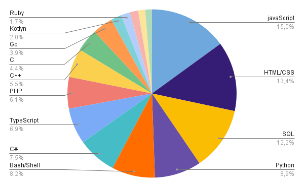
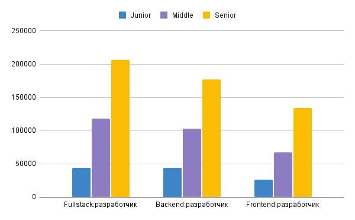

History of the specialty
The profession of a web programmer appeared at the end of the last century, along with the Internet. Initially, sites were not very popular, so web programmers were not in great demand. But the more the world Putin penetrated people's lives, the higher the demand for specialists who could create Internet pages became. In recent years, the web industry has been developing rapidly: new languagesand rules, technologies and features are emerging.
Working as a web programmer is good because it first of all requires knowledge and skills, not a diploma. You can become a professional at any age, and you don't even have to leave your home - many programmers work remotely, collaborate with foreign companies. But you need to be prepared for irregular working hours and frequent emergencies. Web developers are highly qualified professionals with a diploma of higher education, and sometimes several.
Full-stack developers of web software cover the demand from employers. They talk about the differences between server and client technologies and discuss the interaction "on two fronts". Finding such a professional is a great success, but also a worthy one. Then a model of the intended application is designed and the concept is worked out. The next stage is writing code, testing each of its tasks and eliminating flaws. First, a beta version is issued "on the mountain", and later - a full-fledged product. A team of craftsmen always works on the project, each of which is responsible for his own area of work.
Direction in web development
There are three areas in the field of web development:
- Front-end developer. Such an employee concentrates on the visual part of the project, which includes the appearance of the resource, its interface, and all kinds of applications. It makes the use of each page of the site as comfortable as possible, that is, it focuses on the client side of the resource. Its main tools are CSS, HTML, JavaScript. This list is complemented by a whole list of programs designed to improve the site: Bootstrap, jQuery, AngularJS, LESS, Sass / SCSS, etc.
- Back-end developer. This specialist is engaged in server technologies. It receives a user request from the front end, processes it, and passes it back in a form accessible to the client. What happens on the server side is not available to the user, he sees only the final result and cannot interfere with the application from the outside. The back-end developer uses the following tools: different programming languages(PHP, Perl, Java, Python, Ruby), frameworks (Kohana, Codeigniter, Yii), and MySQL for saving data.
- Full-stack developer. This is a professional capable of working with both Back-end and Front-end website development. He must have knowledge of both types of development.
Skills and abilities of a front-end developer
Soft_skils
- Work in a team
- Fundamentals of planning and purpose
- Leadership
- Public speaking and self-presentation
- Project management
Hard_skils
- Knowledge of programming languages
- Ability to analyze layout
- Attention to detail at work
- sociability
- Workflow management skills
Popular languages and technologies for front-end entrepreneurs
Ranking of the most commonly used programming languages and technologies prepared by Stack Overwolf for (2020)

HTML - a standardized document markup language for viewing web pages in a browser. Web browsers receive an HTML document from a server via HTTP/HTTPS protocols or open it from a local disk, then interpret the code into an interface that will be displayed on the monitor screen
CSS - a formal language for describing the appearance of a document written using a markup language. It can also be applied to any XML document, such as SVG or XUL.
REACT- An open source JavaScript library for developing user interfaces. React is developed and maintained by Facebook, Instagram, and a community of individual developers and corporations. React can be used to develop single page and mobile applications.
JAVA SCRIPT(JS) - multi-paradigm programming language. Supports object-oriented, imperative and functional styles. It is an implementation of the ECMAScript specification. JavaScript is commonly used as an embeddable language for programmatic access to application objects.
PHP - a general-purpose scripting language heavily used for developing web applications. is currently supported by the vast majority of hosting providers and is one of the leading languages used to create dynamic websites.
Pros and cons of the profession
Pros
- Demand and high pay
- Possibility of constant self-education
- Possibility of remote work.
- Higher education is not required.
- Often creative work.
Cons
- Large volumes of work.
- Irregular working hours
- Passive lifestyle
- English will have to be learned.
- In small projects, you have to be a human orchestra
How much do web developers earn?
One question that many people have when they first consider working in the web development industry is the salary. What is the salary of an entry level programmer? What is the salary of a programmer and developer? What is the difference between front-end and back-end developer salaries? What is the difference between the salaries of those who work in the company on a full-time basis?
Specialty levels
Junior - this is a developer with little or no experience, just getting started in a chosen technology area.
Middle - a developer who already has some programming experience. He can already perform complex tasks on his own, but he needs direction.
Senior - an experienced developer who has seen a lot of code, scored a bunch of bumps and managed to draw the right conclusions from this. The main task of the signor is to make the right technological decisions in the project
| Direction | Junior | Middle | Senior |
| full-stack | 44000 | 118000 | 206000 | Back-end | 44000 | 103000 | 177000 |
| Front-end | 26000 | 67000 | 134000 |

Prospects for the profession
Career prospects depend only on your ambitions. In the next decade, the IT sector will grow, so web development will remain one of the most promising professions. You can develop in one of the following areas:
- Reach Senior level in frontend or backend development, become a leading web developer in a large company.
- Create your own business: assemble a team, open an IT or digital agency.
- Master the profession of the future, for example, Machine Learning, Data Science, AR/VR. Machine learning, neural networks are industries in which specialists earn more than ordinary programmers. Knowledge of web development will be a good base for further study of ML.